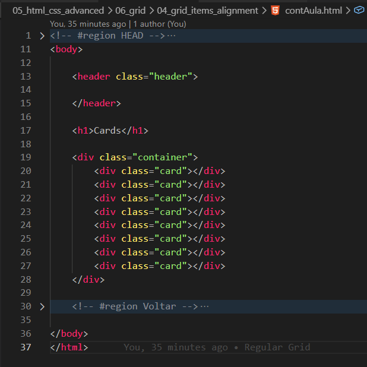
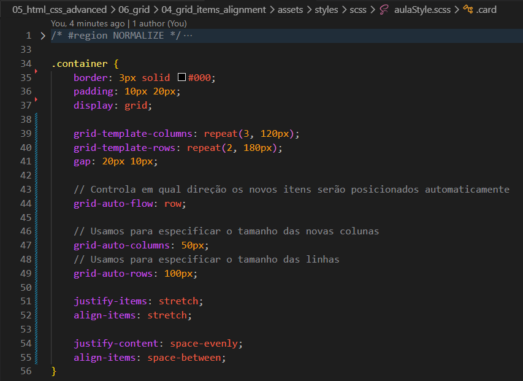
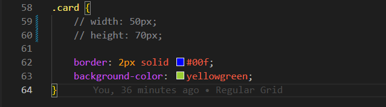

Grid Items Alignment
Introdução
Agora iremos ver o comportamento dos grid items dentro de um grid container.
Agora iremos ver o comportamento dos grid items dentro de um grid container.
HTML:

CSS:

Parte 2 do CSS:

Usamos essa propriedade para definir a quantidade e o tamanho das linhas do grid.
Usamos para controlar em qual direção os novos itens serão posicionados automaticamente pelo Grid quando eles não possuírem uma posição definida manualmente.
Com row, os itens são adicionados primeiro nas linhas e, quando não houver mais espaço, uma nova linha é criada.
Usamos essas propriedades para definir o tamanho das novas colunas ou linhas criadas automaticamente pelo Grid.
Elas são utilizadas principalmente quando o Grid precisa criar colunas ou linhas extras além das definidas em grid-template-columns ou grid-template-rows.
Essas propriedades controlam o alinhamento dos itens dentro de suas células do Grid.
O valor padrão é stretch, fazendo com que os itens ocupem todo o espaço disponível dentro da célula.
Outros valores comuns são: